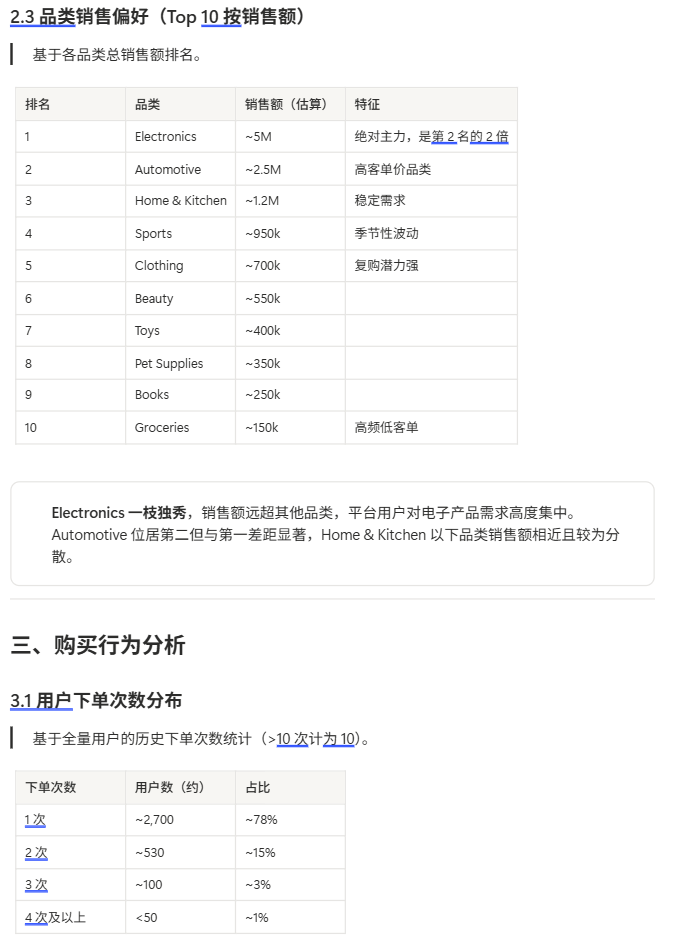

项目背景
基于 17 万+ 订单数据，分析消费者行为、价格带和品类转化特征，为运营策略提供数据支持。
核心分析一：价格带与转化率
高价格带商品支付转化率显著高于低价格带商品，各品类转化率集中在 86.2%—86.8% 区间。
87.1%
高价格带支付转化率
85.7%
低价格带支付转化率

价格带对比图
待补充图表
核心分析二：销售时段诊断
按月份聚合交易量，结合外部日历识别销售低谷。识别 2 月春节假期及 4—5 月促销节点不足等季节性因素。
策略建议
- 高价格带商品：强化推荐策略，放大高转化优势。
- 低价格带商品：组合销售优化，提升连带与客单。
- 时段策略：针对 2 月春节、4—5 月节点设计促销节奏。
分析结论与业务建议的对应
每一项建议都对应一个数据结论，体现从「数据」到「决策」的完整链路。
项目复盘与经验总结
- 价格带分析的结论要区分「统计差异」与「业务含义」，避免过度解读微小差距。
- 时段诊断需要结合外部日历（节假日、促销节点）才能形成可落地的策略。
- 数据分析的终点不是图表，而是能指导行动的决策建议。